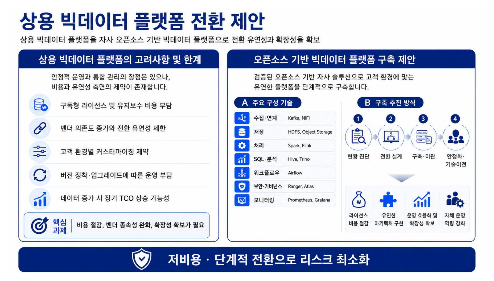
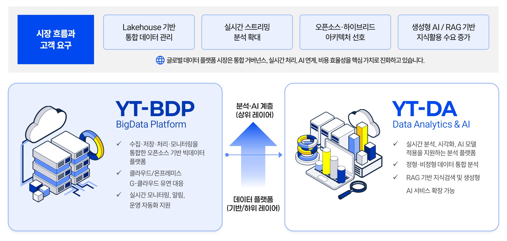
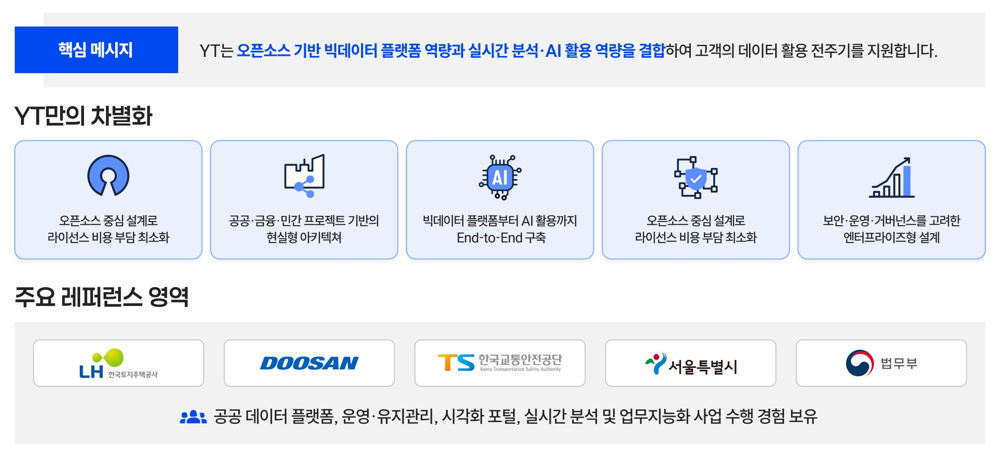

03 Solution
솔루션
오픈소스 기반 빅데이터 플랫폼, 통합 Data & AI 솔루션, 그리고 대표 레퍼런스 스마트심사까지 — 검증된 자체 솔루션을 제공합니다.
빅데이터 플랫폼
빅데이터 플랫폼 (Hadoop)
상용 빅데이터 플랫폼을 자사 오픈소스 기반 빅데이터 플랫폼으로 전환하여 유연성과 확장성을 확보합니다. 저비용·단계적 전환으로 리스크를 최소화합니다.

Data & AI
Data & AI Solution
YT는 오픈소스 기반 빅데이터 플랫폼 역량과 실시간 분석·AI 활용 역량을 결합하여 고객의 데이터 활용 전 주기를 지원합니다. (YT BigData·AI Solution)


스마트심사
스마트심사 솔루션
행정 심사 업무의 정확성과 처리 속도를 높이는 지능형 심사 지원 솔루션입니다. LH(한국토지주택공사)의 심사 프로세스에 특화하여 구축·운영·고도화를 수행 중인 대표 레퍼런스입니다.
🏛️
스마트심사 시스템
데이터·AI 기반으로 행정 심사 절차를 자동화·표준화하여 심사 품질과 효율을 높입니다. 데이터 연계, 심사 자동화, 이력 관리, 통계·분석 기능을 통합 제공하며, 지속적인 운영·고도화를 통해 안정적으로 서비스하고 있습니다.
2023
LH 스마트심사 시스템 운영유지관리 및 고도화 용역
2024
LH 스마트심사 운영유지관리 및 고도화 (2차)
2025~
지속 운영 및 고도화 수행 중